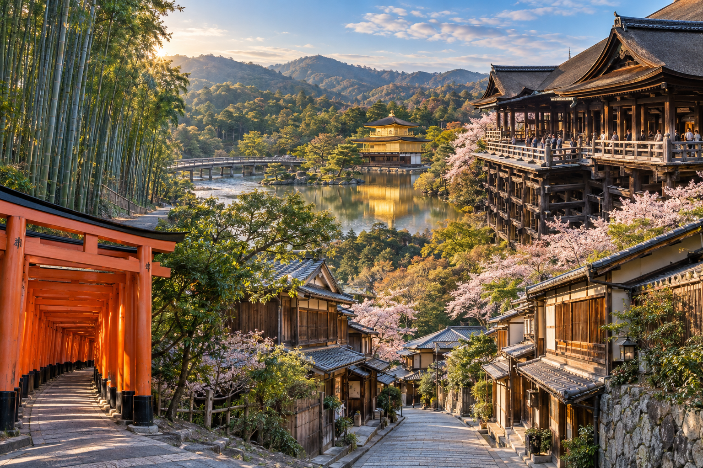
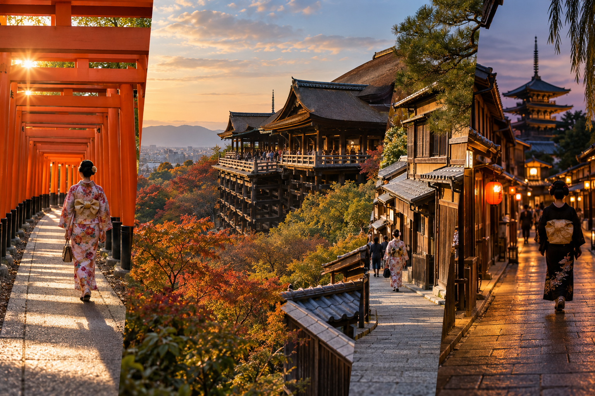
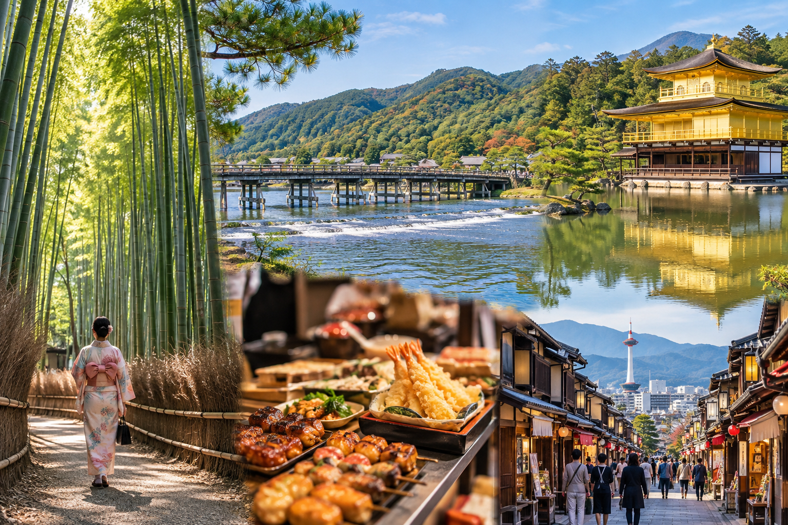

Kyoto 2-Day Itinerary
Two days in Kyoto is enough for a strong first visit, but only if you accept one important rule: you cannot see everything. Kyoto's major sights are spread across different parts of the city, and trying to connect every famous temple in 48 hours usually creates more time on buses and trains than you expect.
This two-day Kyoto itinerary focuses on the experiences that give a first-time visitor the best introduction to the city. Day 1 combines Fushimi Inari with Kiyomizu-dera, Higashiyama, Yasaka Shrine, and Gion. Day 2 will focus on Arashiyama, Kinkaku-ji, and central Kyoto, creating two geographically different days rather than repeating the same type of sightseeing.
The route assumes you have two full sightseeing days. If you arrive from Tokyo or Osaka during the morning or afternoon, treat that arrival period separately rather than counting it as Day 1.
Kyoto 2-Day Itinerary at a Glance

| Day | Route | Main Experience |
|---|---|---|
| Day 1 | Fushimi Inari → Kiyomizu-dera → Sannenzaka & Ninenzaka → Yasaka Shrine → Gion | Shrines, historic streets and eastern Kyoto |
| Day 2 | Arashiyama → Kinkaku-ji → Central Kyoto → Nishiki /Downtown | Bamboo, temples, gardens and city life |
This route intentionally leaves out several famous Kyoto attractions.
That is not a mistake.
With only two days, good planning means choosing the strongest route rather than collecting the largest number of place names.
Who Is This 2-Day Kyoto Itinerary For?
This itinerary works best if:
- ✓It is your first visit to Kyoto
- ✓You have exactly two full days
- ✓You are comfortable walking
- ✓You want major cultural highlights
- ✓You prefer efficient geographic planning
- ✓You are continuing to Osaka, Nara, or another Japanese city afterward
It is not designed for travelers who want:
- ✓A very slow temple-focused trip
- ✓Several museums
- ✓Long hikes
- ✓Extensive northern Kyoto sightseeing
- ✓Multiple tea or craft experiences
- ✓A full day trip outside Kyoto
Those work better with more time.
Is Two Days Really Enough for Kyoto?
Yes, but two days is a highlights trip.
You can experience:
- ✓Fushimi Inari
- ✓Kiyomizu-dera
- ✓Higashiyama
- ✓Gion
- ✓Arashiyama
- ✓Kinkaku-ji
- ✓Central Kyoto
without turning the trip into a race.
What you cannot realistically do is add every other famous temple on top.
If you have another full day available, the Kyoto 3-Day Itinerary will use that extra time differently rather than simply adding random stops to this route.
Where Should You Stay for This Itinerary?
For only two days, location matters.
Good broad choices include:
- ✓Kyoto Station area
- ✓Downtown Kyoto
- ✓Gion/Higashiyama side
The right choice depends on your arrival route, budget, and evening preferences.
The detailed neighborhood comparison belongs in Where to Stay in Kyoto: Best Areas for First-Time Visitors.
For this itinerary, the main rule is simpler:
Stay close to useful transport and avoid changing hotels.
How Early Should You Start?
Start both days reasonably early.
You do not need to turn the trip into a 5 AM challenge.
But Kyoto's most famous outdoor locations become much busier as the morning develops.
Day 1 especially benefits from an early start because:
- ✓Fushimi Inari is more comfortable before peak daytime crowds
- ✓Higashiyama becomes busier later
- ✓You need enough time to walk slowly through eastern Kyoto
A good target is to begin sightseeing around 7:00–8:00 AM.
Day 1: Fushimi Inari, Kiyomizu-dera, Higashiyama and Gion

Day 1 gives you the strongest introduction to traditional Kyoto.
The route is:
Fushimi Inari → Kiyomizu-dera → Sannenzaka → Ninenzaka → Yasaka area → Gion
The first stop sits south of central Kyoto.
After that, the rest of the day moves into eastern Kyoto, where much of the route can be explored on foot.
7:00–8:30 AM: Start at Fushimi Inari Taisha
Begin at Fushimi Inari Taisha.
This is one of Kyoto's most recognizable shrines and one of the best places to use an early start.
The shrine is famous for the paths of vermilion torii gates that climb Mount Inari.
Your goal on a two-day itinerary is not necessarily to hike the entire mountain.
That would consume time you need later in eastern Kyoto.
How Much of Fushimi Inari Should You Walk?
For most first-time visitors with only two Kyoto days, I recommend exploring:
- ✓The main shrine area
- ✓The lower torii paths
- ✓A meaningful section of the mountain trail
Then turn around when you feel you have experienced the place properly.
The full mountain route is better suited to travelers who specifically enjoy hiking or have more time.
Why Visit Fushimi Inari First?
There are three reasons.
1. Crowds
The lower torii paths are extremely popular.
Starting earlier normally gives you a better experience than arriving during the busiest part of the day.
2. Easy Morning Energy
The shrine involves uphill walking.
It is better to do that while you are fresh rather than after an entire day of sightseeing.
3. Geography
Fushimi Inari has useful rail connections toward the eastern side of Kyoto.
That lets you move north after your visit instead of crossing the city repeatedly.
Do Not Wait for an Empty Torii Tunnel
You may see photographs showing one person alone beneath hundreds of gates.
Do not build your visit around recreating that image.
Walk farther, be patient, and enjoy the shrine itself.
Kyoto is a major international destination.
Other visitors being present does not mean your visit failed.
How Long Should You Spend at Fushimi Inari?
For this itinerary:
about 1.5 hours
works well for many visitors.
Allow longer if:
- ✓You want to hike higher
- ✓Photography is a priority
- ✓You walk slowly
If you decide to complete much more of the mountain route, remove something later rather than making the entire day late.
8:30–9:30 AM: Travel Toward Higashiyama
After Fushimi Inari, move toward eastern Kyoto.
Depending on the route you choose, rail can handle much of the journey before the final walk or short local connection.
Do not automatically return to Kyoto Station first.
That can create unnecessary backtracking.
Your next major destination is:
Kiyomizu-dera
but remember that reaching the temple usually includes an uphill walk.
Allow time for it.
9:30–11:00 AM: Kiyomizu-dera
Spend the next part of the morning at Kiyomizu-dera.
This is one of Kyoto's defining first-time sights.
The temple is built into the wooded Higashiyama hillside and is especially known for its large wooden terrace overlooking Kyoto.
Give yourself time for more than one photograph.
Explore:
- ✓Main temple area
- ✓Terrace
- ✓Views
- ✓Temple grounds
- ✓Walking paths
Why Kiyomizu-dera Fits Day 1?
Kiyomizu-dera should not be treated as an isolated stop.
Its location allows you to continue naturally downhill through historic Higashiyama.
That means the temple begins a much larger walking section rather than forcing another cross-city transfer.
Do Not Rush Through the Temple
A common two-day-itinerary mistake is allocating:
30 minutes
to every major attraction.
That does not work well here.
Between:
- ✓Uphill approach
- ✓Entrance
- ✓Main hall
- ✓Terrace
- ✓Temple grounds
- ✓Views
the visit deserves proper time.
Around 1–1.5 hours is a more comfortable starting point.
Seasonal Conditions Can Change the Experience
Kiyomizu-dera is particularly popular during:
- ✓Cherry blossom season
- ✓Autumn foliage
- ✓Special evening openings
During those periods, expect heavier crowds.
Do not respond by adding more attractions.
Give the area more time instead.
11:00 AM–12:30 PM: Walk Sannenzaka and Ninenzaka
From the Kiyomizu area, continue downhill through the historic streets.
This is one of the best parts of the entire two-day route because you can stop thinking about transport for a while.
Explore areas around:
- ✓Sannenzaka
- ✓Ninenzaka
- ✓Traditional shops
- ✓Cafes
- ✓Small side streets
The exact path is less important than moving gradually north toward the Yasaka and Gion side.
Do Not Treat These Streets as a Race
You will find:
- ✓Souvenirs
- ✓Traditional sweets
- ✓Tea
- ✓Cafes
- ✓Crafts
- ✓Historic-style buildings
Stop when something genuinely interests you.
If you spend another 20 minutes over tea or a small shop, that is not wasted itinerary time.
This is Kyoto sightseeing.
Look Around the Yasaka Pagoda Area
The area around Yasaka Pagoda is one of Higashiyama's recognizable street scenes.
You can include it naturally as part of the walk.
There is no need to make it another rigid timed attraction.
Use the historic streets themselves as the experience.
12:30–1:30 PM: Lunch in Higashiyama
Take a proper lunch break.
Do not postpone eating until 3 PM simply because your attraction list is long.
You will already have:
- ✓Walked Fushimi Inari
- ✓Traveled across part of Kyoto
- ✓Climbed toward Kiyomizu-dera
- ✓Walked through Higashiyama
You need a break.
Possible lunch styles include:
- ✓Soba
- ✓Udon
- ✓Tofu dishes
- ✓Sushi
- ✓Set meals
- ✓Casual Japanese restaurants
You do not need a famous social-media restaurant.
A convenient good meal often works better than spending an hour in a queue.
1:30–3:30 PM: Continue Through Higashiyama
After lunch, continue gradually north.
This section should remain flexible.
Depending on:
- ✓Energy
- ✓Weather
- ✓Crowds
- ✓Interests
you could spend more time around:
- ✓Historic streets
- ✓Smaller temples
- ✓Shops
- ✓Cafes
- ✓Yasaka area
Do not add several distant temples simply because you have two hours available.
The purpose of Day 1 is to experience eastern Kyoto as a connected area.
Optional Stop: Kodai-ji Area
If you want another temple and still have energy, the Kodai-ji area can fit geographically.
Treat it as optional.
Do not let an extra temple make the rest of the day stressful.
Add It If:
- ✓You enjoy temple gardens
- ✓You are moving comfortably
- ✓You are ahead of schedule
Skip It If:
- ✓You already feel temple fatigue
- ✓You spent longer at Kiyomizu-dera
- ✓You prefer shops and streets
- ✓The weather is tiring
The itinerary still works without it.
3:30–4:30 PM: Yasaka Shrine and Maruyama Park Area
Continue toward Yasaka Shrine.
The shrine sits at a natural transition between Higashiyama and Gion.
This makes it easy to include without another major transport journey.
Spend some time around:
- ✓Shrine grounds
- ✓Nearby streets
- ✓Maruyama Park if it interests you
You do not need to turn this into another two-hour attraction.
The main value is how naturally it connects the afternoon with the evening.
4:30 PM Onward: Gion
Finish Day 1 in Gion.
This works better than visiting Gion briefly at midday because the district gradually changes as the afternoon moves into evening.
Walk through the wider area and notice:
- ✓Traditional architecture
- ✓Tea-house streets
- ✓Restaurants
- ✓Smaller lanes
- ✓Evening atmosphere
But remember that Gion is not an outdoor museum.
People live and work here.
Gion Photography Etiquette
Do not:
- ✓Follow geiko or maiko
- ✓Block their path
- ✓Ask them to stop for photographs
- ✓Enter private streets or property
- ✓Ignore photography restrictions
If a lane is marked private or photography is prohibited, respect it.
Seeing a geiko or maiko is not something your itinerary needs to guarantee.
Should You Visit Hanamikoji?
You can walk through public sections of the area, but follow current local signs and restrictions carefully.
Do not enter private side lanes because they look attractive in photographs.
The best Gion experience is respectful and low-pressure.
Dinner: Gion, Pontocho or Downtown Kyoto
After Gion, choose dinner based on your energy.
You could stay near:
- ✓Gion
- ✓Kawaramachi
- ✓Pontocho surroundings
- ✓Downtown Kyoto
This gives you flexibility instead of booking a restaurant on the other side of the city.
Should You Reserve Dinner?
Reserve ahead if:
- ✓You want a specific famous restaurant
- ✓Kaiseki is important
- ✓It is a special occasion
- ✓You are visiting during peak season
Otherwise, keeping the evening flexible can work well.
Day 1 Route Summary
Your first Kyoto day is:
Fushimi Inari → Kiyomizu-dera → Higashiyama → Yasaka Shrine → Gion → Dinner
Approximate structure:
| Time | Stop |
|---|---|
| 7:00–8:30 AM | Fushimi Inari |
| 8:30–9:30 AM | Transfer toward Higashiyama |
| 9:30–11:00 AM | Kiyomizu-dera |
| 11:00 AM–12:30 PM | Sannenzaka & Ninenzaka |
| 12:30–1:30 PM | Lunch |
| 1:30–3:30 PM | Higashiyama exploration |
| 3:30–4:30 PM | Yasaka Shrine area |
| 4:30 PM onward | Gion |
| Evening | Dinner |
These are planning ranges, not appointments.
If you enjoy one area more, stay longer.
Why Day 1 Works?
The day moves broadly:
south → northeast → north through eastern Kyoto
rather than bouncing between distant attractions.
After Fushimi Inari, much of the sightseeing becomes a connected walking experience.
That reduces:
- ✓Bus dependence
- ✓Repeated station changes
- ✓Wasted travel time
and gives you a much better sense of Kyoto's historic eastern side.
What to Skip if Day 1 Runs Late?
Do not rush everything.
Cut in this order:
First
Any optional extra temple.
Second
Extra shopping stops.
Keep
- ✓Fushimi Inari
- ✓Kiyomizu-dera
- ✓Main Higashiyama walk
Gion can remain flexible because you can reach it later in the day.
The route should bend around your energy rather than forcing you to chase every planned minute.
Day 2: Arashiyama, Kinkaku-ji, Nishiki Market and Downtown Kyoto

Day 2 gives you a very different side of Kyoto.
Day 1 focused on shrine paths, temple slopes, historic streets, and Gion. Day 2 moves through:
western Kyoto → northern Kyoto → central Kyoto
The route is:
Arashiyama → Kinkaku-ji → Nishiki Market → Downtown Kyoto
This is still a full sightseeing day, but it avoids trying to add several distant temples between the major stops.
7:00–9:00 AM: Start in Arashiyama
Begin the morning in Arashiyama.
Getting here early has two advantages:
- ✓The area is more comfortable before the main daytime crowds
- ✓You have enough time to experience more than the bamboo grove
Many first-time visitors make Arashiyama a quick photo stop.
That wastes much of the reason for traveling to western Kyoto.
Give the area a proper morning.
Start With the Arashiyama Bamboo Grove
Go first to the Arashiyama Bamboo Grove.
The path through the bamboo is relatively short.
You do not need two hours just for the grove.
Walk slowly, look beyond the camera, and continue into the surrounding area.
Official tourism guidance places the bamboo grove about a 10-minute walk from JR Saga-Arashiyama Station. That makes rail a practical way to start Day 2.
Do Not Expect an Empty Bamboo Path
Even early in the day, you may see other visitors.
Avoid spending large amounts of time waiting for:
one perfect photograph with nobody else in it.
The bamboo grove is a public sightseeing area, not a private photography location.
Enjoy the setting and continue.
8:30–10:00 AM: Tenryu-ji and Its Garden
After the bamboo area, consider Tenryu-ji.
This is one of Arashiyama's major temples and gives the morning more cultural depth than visiting the bamboo alone.
The main appeal includes:
- ✓Temple grounds
- ✓Garden
- ✓Mountain backdrop
- ✓Seasonal scenery
It works naturally with the bamboo grove because the two are very close.
Should You Visit Tenryu-ji?
I recommend it for most first-time visitors.
Include It If:
- ✓You enjoy gardens
- ✓You want more than a bamboo photograph
- ✓You have not already reached temple fatigue
Skip It If:
- ✓You need a slower morning
- ✓You have mobility limitations
- ✓You want more time near the river
- ✓You have another specific Arashiyama priority
The itinerary still works without it.
Why This Is Better Than Adding Another Distant Temple?
You are already in Arashiyama.
Visiting something nearby gives you more sightseeing for less transport.
That is the main principle behind this two-day Kyoto route.
10:00–10:45 AM: Togetsukyo Bridge and the River
Move toward Togetsukyo Bridge and the river.
This section gives you a break from temples.
Take time for:
- ✓River views
- ✓Mountain scenery
- ✓Short walk
- ✓Photos
- ✓Coffee or snack if needed
You do not need to cross the bridge several times or walk far into every side street.
The goal is to experience the wider Arashiyama setting.
Why the River Matters
Without the river and mountain setting, an Arashiyama visit can become:
train → bamboo → temple → train
That misses much of the character of the area.
Allow some unstructured walking.
What About the Arashiyama Monkey Park?
The Iwatayama Monkey Park is popular, but I would not automatically include it in this two-day itinerary.
Reaching the monkeys involves an uphill walk.
It also adds significant time.
Add It If:
- ✓Monkeys are a major interest
- ✓You are physically comfortable with the climb
- ✓You are willing to reduce another Arashiyama stop
Skip It If:
- ✓You want Kinkaku-ji later
- ✓You prefer gardens and cultural sites
- ✓You are traveling with someone who struggles with hills
- ✓Summer heat is strong
Do not add it simply because you are already in Arashiyama.
What About the Sagano Scenic Railway?
The scenic railway can be enjoyable, especially during seasonal scenery.
But again, it changes the day.
For this compact two-day Kyoto itinerary, I would treat it as an alternative experience, not an extra stop.
If the scenic railway is one of your priorities, give Arashiyama more of the day and consider removing Kinkaku-ji.
10:45–11:45 AM: Early Lunch in Arashiyama
Eat before leaving the area.
An earlier lunch can help you avoid part of the busiest restaurant period.
Possible choices include:
- ✓Soba
- ✓Udon
- ✓Tofu
- ✓Set meals
- ✓Rice bowls
- ✓Casual Japanese food
Do not spend an hour traveling elsewhere simply because one restaurant appeared on a social-media list.
A good meal that fits the route is more useful on a two-day trip.
11:45 AM–12:45 PM: Travel From Arashiyama to Kinkaku-ji
This is the least seamless part of Day 2.
Arashiyama and Kinkaku-ji are not directly beside one another.
You may use a combination of:
- ✓Local railway
- ✓Bus
- ✓Taxi
- ✓Walking
The best route depends on:
- ✓Your starting point within Arashiyama
- ✓Traffic
- ✓Current service
- ✓Group size
Consider a Taxi for This Transfer
This is one place where spending more can save useful time.
If you are:
- ✓Two to four people
- ✓Tired
- ✓Visiting during heavy bus traffic
- ✓Trying to keep Day 2 efficient
compare the taxi option with public transport.
A taxi is not mandatory.
But this is exactly the type of awkward cross-area connection where it can be useful.
Do Not Return to Kyoto Station
That would create unnecessary backtracking.
Your route should continue generally:
west → north
not:
west → central → north → central again.
12:45–1:45 PM: Kinkaku-ji
Next, visit Kinkaku-ji, the Golden Pavilion.
This is one of Kyoto's most recognizable landmarks.
The gold-covered pavilion beside the pond creates one of the city's defining views.
Kinkaku-ji works well in this two-day itinerary because it adds northern Kyoto without asking you to spend half a day there.
How Long Do You Need at Kinkaku-ji?
For most visitors:
about 45–60 minutes
is a reasonable starting point?
The visitor route is more compact than places such as:
- ✓Fushimi Inari
- ✓Arashiyama
- ✓Higashiyama
You do not need to allocate half a day.
Follow the Visitor Route
The temple experience is generally structured around a route through the grounds.
Take time at:
- ✓Main pavilion viewpoint
- ✓Pond
- ✓Garden
- ✓Smaller details along the route
Do not spend 30 minutes blocking the first viewpoint trying to get one perfect image.
Move through the grounds and enjoy different perspectives.
Why Kinkaku-ji Is on Day 2
It is geographically closer to the western side of the city than to Day 1's eastern Kyoto route.
That makes:
Arashiyama → Kinkaku-ji
more logical than trying to add Kinkaku-ji between Kiyomizu-dera and Gion.
Is Kinkaku-ji Essential?
No Kyoto attraction is mandatory.
But for a first two-day visit, it is one of the strongest candidates because:
- ✓It is visually distinctive
- ✓The visit does not require several hours
- ✓It adds a different temple experience
Skip Kinkaku-ji If:
- ✓You want a slower Arashiyama day
- ✓You have low interest in temples
- ✓You have significant mobility or transport concerns
- ✓Another northern Kyoto site matters more personally
Use the time for deeper sightseeing rather than replacing it with three other temples.
1:45–3:00 PM: Travel Toward Central Kyoto
After Kinkaku-ji, move toward central Kyoto.
Your next major area is:
Nishiki Market and downtown Kyoto
You may use:
- ✓Bus
- ✓Taxi
- ✓Bus + subway
- ✓Another route suggested by your navigation app
Do not worry about finding one universal route that every traveler should use.
Traffic conditions can change the best option.
3:00–4:30 PM: Nishiki Market
Spend the middle to late afternoon around Nishiki Market.
This gives the second day another type of experience after:
- ✓Bamboo
- ✓Garden
- ✓River
- ✓Golden Pavilion
Nishiki is a narrow covered market street with shops selling a range of:
- ✓Food
- ✓Ingredients
- ✓Sweets
- ✓Tea
- ✓Pickles
- ✓Seafood
- ✓Cooking-related products
- ✓Souvenirs
The specific businesses and their opening hours vary, so I would not leave Nishiki until late evening.
Do Not Treat Nishiki as Lunch Number Two
You may want to try:
- ✓Snack
- ✓Sweet
- ✓Drink
- ✓Small specialty item
That is fine.
But avoid turning the visit into a mission to eat something from every stall.
The market is also a working commercial area.
Nishiki Market Etiquette
Because the passage is narrow:
- ✓Keep moving when possible
- ✓Do not block shop fronts
- ✓Follow food-stall instructions
- ✓Eat where vendors tell you to
- ✓Dispose of rubbish correctly
If a shop asks customers not to carry food away, respect that instruction.
How Long Should You Spend?
Around:
1–1.5 hours
works for many first-time visitors.
Spend longer if:
- ✓Food is a major interest
- ✓You enjoy shopping
- ✓You want tea or kitchen products
Spend less if the market is very crowded or shopping has low priority.
4:30–6:00 PM: Teramachi, Shinkyogoku or Downtown Kyoto
After Nishiki, do not board another bus to chase one more distant temple.
Stay in central Kyoto.
Depending on your interests, explore:
- ✓Teramachi
- ✓Shinkyogoku
- ✓Kawaramachi
- ✓Department stores
- ✓Cafes
- ✓Shops
- ✓Nearby streets
This is deliberately flexible.
After two full Kyoto sightseeing days, you may want:
- ✓Shopping
- ✓Coffee
- ✓Rest
- ✓Souvenirs
- ✓An early dinner
That is a better end to the itinerary than another long transfer.
Optional: Walk Toward the Kamo River
If the weather is comfortable, you can move toward the Kamo River before dinner.
The river gives you an open, less structured end to the afternoon.
It works well if you want a break from:
- ✓Temples
- ✓Shops
- ✓Crowded streets
You do not need to make it a formal sightseeing stop.
6:00 PM Onward: Dinner in Downtown Kyoto
Finish the two-day trip with dinner around:
- ✓Kawaramachi
- ✓Pontocho surroundings
- ✓Kiyamachi
- ✓Central Kyoto
Choose based on:
- ✓Budget
- ✓Food preference
- ✓Energy
Possible options include:
- ✓Izakaya
- ✓Soba
- ✓Sushi
- ✓Yakitori
- ✓Tofu
- ✓Tempura
- ✓Kyoto-style dishes
- ✓Modern Japanese restaurants
Pontocho
Pontocho is a narrow dining area near the Kamo River.
It can be atmospheric in the evening.
Restaurants range widely in:
- ✓Price
- ✓Style
- ✓Formality
Do not assume every Pontocho restaurant is expensive.
But check:
- ✓Menu
- ✓Seating
- ✓Reservation requirements
- ✓Pricing
before entering.
Should You Add Gion Again on Day 2?
You can if:
- ✓You loved it on Day 1
- ✓Dinner is nearby
- ✓You want another evening walk
But do not make it another required stop.
Day 1 already gave Gion meaningful time.
Day 2 should finish according to your energy.
Day 2 Route Summary
Your second Kyoto day is:
Arashiyama → Kinkaku-ji → Nishiki Market → Downtown Kyoto
A practical schedule looks like this:
| Time | Stop |
|---|---|
| 7:00–9:00 AM | Arashiyama Bamboo Grove + surrounding area |
| 8:30–10:00 AM | Tenryu-ji depending on pace |
| 10:00–10:45 AM | Togetsukyo Bridge and river |
| 10:45–11:45 AM | Early lunch |
| 11:45 AM–12:45 PM | Transfer to Kinkaku-ji |
| 12:45–1:45 PM | Kinkaku-ji |
| 1:45–3:00 PM | Transfer to central Kyoto |
| 3:00–4:30 PM | Nishiki Market |
| 4:30–6:00 PM | Downtown Kyoto |
| Evening | Dinner |
Treat these as flexible planning windows.
They are not reservations.
What to Skip if Day 2 Runs Late
Cut optional activities before cutting the core route.
First Cut
- ✓Monkey Park
- ✓Extra Arashiyama temples
- ✓Long shopping stops
Second Cut
Either:
Kinkaku-ji
or:
Nishiki Market
depending on your interests.
Protect
Arashiyama
because you have already traveled to western Kyoto specifically to experience the area.
Do not rush an entire morning simply to preserve every later stop.
Day 2 Variation for Garden Lovers
If gardens and temples matter more than shopping:
Spend longer in:
- ✓Tenryu-ji
- ✓Arashiyama
Then visit:
- ✓Kinkaku-ji
and reduce:
- ✓Nishiki
- ✓Downtown shopping
This creates a more cultural second day.
Day 2 Variation for Food and Shopping Travelers
If food matters more than another temple:
Do:
Arashiyama → Nishiki → Downtown
and consider skipping Kinkaku-ji.
This removes the main northbound detour.
You gain more time for:
- ✓Food
- ✓Tea
- ✓Shopping
- ✓Central Kyoto
That is a perfectly valid two-day itinerary.
Day 2 Variation for Families
For families with younger children, I would simplify the day.
Consider:
Arashiyama → central Kyoto
with Kinkaku-ji optional.
This reduces:
- ✓Transport
- ✓Waiting
- ✓Transfers
You can spend longer around:
- ✓River
- ✓Lunch
- ✓Shops
without making the day feel incomplete.
Day 2 Variation for Limited Mobility
Prioritize:
- ✓Rail where practical
- ✓Taxis for awkward transfers
- ✓Fewer stops
- ✓Longer breaks
A possible version is:
Arashiyama → taxi to Kinkaku-ji → taxi/public transport to central Kyoto
Do not measure success by the amount of walking completed.
Accessibility Note for Kinkaku-ji
The main route to the Golden Pavilion has accessible options, but the full traditional garden route is not completely barrier-free.
Travelers using:
- ✓Wheelchairs
- ✓Strollers
- ✓Mobility aids
should follow the designated accessible route and current staff guidance.
Why This Two-Day Kyoto Route Works
The complete itinerary is intentionally divided into geographic blocks.
Day 1
Southern + Eastern Kyoto
Fushimi Inari → Kiyomizu-dera → Higashiyama → Yasaka → Gion
Day 2
Western + Northern + Central Kyoto
Arashiyama → Kinkaku-ji → Nishiki → Downtown
This gives you:
- ✓Fewer unnecessary crossings
- ✓More walking within neighborhoods
- ✓Several different Kyoto experiences
- ✓Clear morning priorities
- ✓Flexible evenings
It also avoids creating two days filled only with temples.
What This Route Deliberately Leaves Out
You may notice famous places missing, including:
- ✓Ginkaku-ji
- ✓Philosopher's Path
- ✓Nijo Castle
- ✓Ryoan-ji
- ✓Kyoto Imperial Palace
- ✓Nanzen-ji
- ✓Heian Shrine
- ✓Sanjusangen-do
You could build excellent Kyoto days around any of these.
They are omitted because you have only two full days.
Trying to include all of them would weaken the itinerary.
The goal is not:
maximum attractions
The goal is:
maximum value from 48 hours in Kyoto.
How to Handle Your Arrival Day
This itinerary assumes you have two complete sightseeing days in Kyoto.
If you arrive from Tokyo, Osaka, or another city during the afternoon, do not immediately start Day 1.
Use the arrival day for something lighter.
Good options include:
- ✓Kyoto Station
- ✓Downtown Kyoto
- ✓Dinner around Kawaramachi
- ✓A short Kamo River walk
- ✓Shopping
- ✓Early rest
This protects your energy for the two full days.
If You Arrive in Kyoto in the Morning
An early arrival gives you more flexibility.
But I would still avoid turning arrival day into another full version of Day 1.
Instead:
- ✓Leave your luggage.
- ✓Have lunch.
- ✓Explore central Kyoto.
- ✓Check into your hotel.
- ✓Start the main itinerary properly the next morning.
Trying to combine:
Shinkansen + luggage + hotel + Fushimi Inari + Higashiyama
can create an unnecessarily tiring first day.
What to Do With Luggage Before Hotel Check-In
Do not take large suitcases sightseeing.
This matters especially in Kyoto because the route may involve:
- ✓Crowded trains
- ✓Buses
- ✓Hills
- ✓Narrow streets
- ✓Temple approaches
Your options may include:
- ✓Leaving luggage at your hotel
- ✓Kyoto Station lockers
- ✓Luggage storage counters
- ✓Same-day luggage delivery
If your hotel accepts luggage before check-in, that is often the easiest option.
Kyoto also has dedicated luggage storage and delivery services around Kyoto Station.
What if You Leave Kyoto After Day 2?
If you are traveling onward that evening, do not carry your luggage through Day 2.
Instead:
- ✓Leave it at your hotel after check-out
- ✓Store it at Kyoto Station
- ✓Use luggage forwarding when appropriate
Then collect it after sightseeing.
If Your Next City Is Osaka
An evening transfer can work well.
Finish central Kyoto sightseeing, collect your luggage, and continue to Osaka.
There is usually little reason to sacrifice the final afternoon just to move hotels early.
If Your Next City Is Tokyo
Allow more buffer.
You will need to:
- ✓Collect luggage
- ✓Reach Kyoto Station
- ✓Find your Shinkansen platform
- ✓Board the correct service
Do not schedule Nishiki Market until the last possible minute.
If Your Next City Is Hiroshima
Again, protect your departure time.
Kyoto → Hiroshima is a longer intercity move than Kyoto → Osaka.
Leave enough margin after Day 2.
Should You Visit Nara During These Two Days?
For this itinerary:
No.
Nara deserves its own block of time.
If you have only two full Kyoto days, using half or all of one for Nara would significantly reduce your Kyoto experience.
A better sequence is:
2 days Kyoto + separate Nara day
if your wider Japan itinerary allows it.
Do not force Nara into these 48 hours because it looks close on a map.
Should You Add Osaka During These Two Days?
Again, not if these are your only two Kyoto days.
Osaka deserves separate time.
Kyoto already has enough to fill both days comfortably.
Use these two days for Kyoto, then continue to Osaka afterward.
Should You Visit Every Stop in This Itinerary?
No.
The core route is a framework.
Your personal priorities matter.
Day 1 Core
I would protect:
- ✓Fushimi Inari
- ✓Kiyomizu-dera
- ✓Higashiyama
Then keep:
- ✓Yasaka Shrine
- ✓Gion
flexible according to energy.
Day 2 Core
I would protect:
- ✓Arashiyama
Then choose how important:
- ✓Kinkaku-ji
- ✓Nishiki Market
- ✓Downtown Kyoto
are to you.
This gives you permission to slow down without feeling that the itinerary has failed.
How Much Walking Should You Expect?
A lot.
Even though you use public transport between major areas, both days contain significant walking.
You may walk through:
- ✓Shrine paths
- ✓Temple grounds
- ✓Historic streets
- ✓Shopping streets
- ✓Stations
- ✓Arashiyama
- ✓Downtown Kyoto
For many travelers, this can become a high-step-count trip.
Do not wear shoes you have never tested before.
Day 1 Is the More Walking-Heavy Day
Expect:
- ✓Fushimi Inari climbing
- ✓Kiyomizu approach
- ✓Higashiyama slopes
- ✓Gion walking
If you have limited energy, shorten the Fushimi Inari climb rather than exhausting yourself before Kiyomizu-dera.
Day 2 Has More Transport Between Areas
Arashiyama itself involves walking, but the bigger issue is moving between:
Arashiyama → Kinkaku-ji → Central Kyoto
Use transport strategically.
Do not walk long connecting distances simply to save a small fare.
Two-Day Kyoto Transport Strategy
For this itinerary, think in sections.
Day 1
Use rail for:
hotel → Fushimi Inari
Then travel toward eastern Kyoto.
Once you reach the Kiyomizu/Higashiyama side, walking becomes a major part of the day.
Day 2
Use rail for:
hotel → Arashiyama
Then compare public transport and taxi options for:
Arashiyama → Kinkaku-ji
After Kinkaku-ji, move toward central Kyoto and stay there for the evening.
Use Rail Before Bus Where Practical
Kyoto buses are useful but can be affected by traffic and heavy visitor demand.
If a train or subway handles most of the route efficiently, use it.
A bus can then handle the final section.
When a Taxi Is Worth Considering
A taxi can be especially useful:
- ✓Between awkwardly connected areas
- ✓With children
- ✓With limited mobility
- ✓During heavy rain
- ✓When buses are crowded
- ✓When several people can split the fare
You do not need to use taxis all day.
One carefully chosen taxi can improve the itinerary.
Do You Need a Transport Pass?
Not necessarily.
This route uses a combination of:
- ✓Railways
- ✓Buses
- ✓Walking
- ✓Possibly taxi
A city transport pass may save money for some versions of the itinerary, but not every traveler follows exactly the same combination of operators.
I would first map your actual journeys.
Then compare the pass.
Do not take a slower route simply because it is included in a pass.
Can You Use an IC Card?
A compatible IC card is useful for many everyday Kyoto transport journeys.
If you already have:
- ✓Suica
- ✓PASMO
- ✓ICOCA
you generally do not need another transport card solely for this Kyoto stay.
Keep enough balance available before starting each day.
How to Adjust This Itinerary in Spring
Spring can be excellent for Kyoto, especially around cherry blossom season.
It can also be one of the busiest periods.
Day 1 in Spring
Allow additional time around:
- ✓Higashiyama
- ✓Gion
- ✓Maruyama Park
Seasonal scenery may make you want to stop more often.
That is fine.
Reduce optional attractions instead of rushing the walk.
Day 2 in Spring
Arashiyama can become particularly busy.
Start early and avoid trying to add every optional attraction.
Spring Packing
Bring:
- ✓Comfortable shoes
- ✓Layers
- ✓Light rain protection
- ✓Water
Morning and evening temperatures can differ from the middle of the day.
How to Adjust This Itinerary in Summer
Summer requires the biggest pacing change.
Kyoto can become hot and humid.
Day 1 Summer Strategy
Start Fushimi Inari early.
Do not attempt the full mountain hike unless:
- ✓You are comfortable in the conditions
- ✓You have enough water
- ✓Hiking is a priority
Use:
- ✓Cafes
- ✓Lunch
- ✓Indoor breaks
during the hotter part of the day.
Day 2 Summer Strategy
Arashiyama should also start early.
Take breaks before traveling to Kinkaku-ji.
Do not underestimate how tiring:
heat + humidity + walking
can become.
Carry
- ✓Water
- ✓Sun protection
- ✓Breathable clothing
- ✓Small towel
- ✓Power bank
Do not wait until you feel unwell before resting.
How to Adjust This Itinerary in Autumn
Autumn is one of Kyoto's most attractive periods.
It is also extremely popular.
Expect additional visitors around:
- ✓Kiyomizu-dera
- ✓Higashiyama
- ✓Arashiyama
- ✓Temple gardens
Give Seasonal Scenery Time
If you spend an extra 30 minutes enjoying autumn foliage at one temple, that can be more valuable than reaching another attraction.
Cut optional stops when needed.
Watch Daylight
Late autumn has less daylight than summer.
Put your strongest outdoor priorities earlier.
Use:
- ✓Gion
- ✓Downtown
- ✓Dinner
for the evening.
How to Adjust This Itinerary in Winter
Winter can make this two-day route easier in some ways because certain periods are less crowded than the major spring and autumn peaks.
But mornings can be cold.
Wear suitable layers.
Winter Advantages
You may find:
- ✓Easier walking
- ✓Less heat fatigue
- ✓A calmer atmosphere on some dates
Winter Considerations
Watch for:
- ✓Shorter daylight
- ✓Cold mornings
- ✓Possible icy conditions
- ✓Weather changes
Do not sacrifice warmth just because you plan to walk all day.
What if It Rains on Day 1?
Do not automatically cancel the day.
Kyoto can still be attractive in rain.
But adjust the route.
Keep
- ✓Kiyomizu-dera if conditions are manageable
- ✓Higashiyama
- ✓Gion
- ✓Restaurants and cafes
Reduce
- ✓Long Fushimi Inari climb
- ✓Excessive outdoor wandering
- ✓Slippery hillside routes
If the rain is heavy, do only the lower Fushimi Inari area and move on.
Watch the Stone Streets
Higashiyama slopes and temple surfaces can become slippery.
Walk carefully.
Good shoes matter even more.
What if It Rains on Day 2?
Day 2 is easier to modify.
Keep if Rain Is Light
- ✓Arashiyama
- ✓Tenryu-ji
- ✓Kinkaku-ji
- ✓Nishiki Market
In Heavy Rain
Consider reducing outdoor Arashiyama time and shifting more time toward:
- ✓Nishiki Market
- ✓Teramachi
- ✓Shinkyogoku
- ✓Museums
- ✓Central shopping
- ✓Long lunch or tea break
The itinerary should respond to conditions rather than forcing the original schedule.
What if Fushimi Inari Is Extremely Crowded?
Keep walking.
Crowds are often most concentrated around:
- ✓Entrance
- ✓Main shrine
- ✓Lower torii sections
But do not spend the morning searching for an empty section simply for photographs.
If the experience is no longer enjoyable:
- ✓Complete a reasonable lower section.
- ✓Turn around.
- ✓Continue to Higashiyama.
You have only two days.
What if Arashiyama Is Extremely Crowded?
Do not focus only on the bamboo grove.
The wider district provides:
- ✓River scenery
- ✓Temple gardens
- ✓Side streets
- ✓Mountain views
If the bamboo path feels unpleasantly crowded, continue.
The success of your Arashiyama morning should not depend on one narrow path.
Should You Swap Day 1 and Day 2?
Yes, when there is a practical reason.
Possible reasons include:
- ✓Weather
- ✓Seasonal conditions
- ✓Restaurant reservation
- ✓Special opening
- ✓Transport disruption
The itinerary does not require Day 1 to happen on the first calendar day.
The important thing is keeping each day's geographic structure intact.
Avoid taking half of Day 1 and combining it with half of Day 2.
What if One Day Has Much Better Weather?
Use the better outdoor weather strategically.
For example, you may prefer clear conditions for:
- ✓Arashiyama
- ✓Kiyomizu views
- ✓Long Higashiyama walks
while central Kyoto shopping works better as a bad-weather fallback.
Check the forecast again each morning.
How to Use Early Morning Without Exhausting Yourself
You do not need two consecutive 5 AM starts.
A sensible approach is:
Day 1
Start Fushimi Inari around 7:00–8:00 AM.
Day 2
Reach Arashiyama around 7:00–8:00 AM.
Then finish evenings according to your energy.
Do not combine:
very early morning + midnight nightlife
on both days.
You will enjoy the second day less.
Should You Return to the Hotel During the Day?
Usually not if your hotel is far from that day's sightseeing zone.
For example, returning from Arashiyama to a Kyoto Station hotel for a one-hour break can use a significant amount of time.
Instead, take a proper break near where you already are.
Use:
- ✓Cafe
- ✓Lunch
- ✓Park
- ✓Restaurant
- ✓Quiet sitting area
If your hotel happens to be nearby, returning is fine.
Food Strategy for Two Days
Do not over-plan every meal.
A good balance is:
Day 1
Lunch in HigashiyamaDinner near
Gion or downtown
Day 2
Lunch in ArashiyamaSnacks or browsing at
NishikiDinner downtown
Reserve only the meals that genuinely matter.
Leaving some flexibility helps because sightseeing can run early or late.
Should You Book a Kaiseki Dinner?
You can.
A two-day stay still gives you enough time for one special Kyoto meal.
If kaiseki is important to you:
- ✓Reserve in advance
- ✓Keep the sightseeing before dinner realistic
- ✓Allow time to return to the hotel if needed
Do not schedule an expensive fixed-time meal immediately after a long, uncertain cross-city transfer.
Two-Day Kyoto Itinerary for Different Travelers
For Culture-Focused Visitors
Keep:
- ✓Fushimi Inari
- ✓Kiyomizu-dera
- ✓Higashiyama
- ✓Gion
- ✓Tenryu-ji
- ✓Kinkaku-ji
Reduce:
- ✓Shopping
- ✓Nishiki time
For Food-Focused Visitors
Keep:
- ✓Higashiyama
- ✓Gion
- ✓Arashiyama
- ✓Nishiki
- ✓Downtown
Consider skipping Kinkaku-ji to create more time for:
- ✓Lunch
- ✓Tea
- ✓Market browsing
- ✓Dinner
For Photographers
Prioritize early:
- ✓Fushimi Inari
- ✓Higashiyama
- ✓Arashiyama
But do not spend an hour waiting for one empty photo.
Kyoto is a functioning city.
For Families
Simplify.
A strong family version could be:
Day 1
Fushimi Inari lower section → Kiyomizu/Higashiyama → Gion
Day 2
Arashiyama → Downtown
Make Kinkaku-ji optional.
For Limited Mobility
Use:
- ✓Taxis selectively
- ✓Rail when practical
- ✓Fewer stops
- ✓Longer breaks
Prioritize the places that matter most rather than trying to complete the exact standard route.
What I Would Not Add to This 2-Day Itinerary
I would not add all of these:
- ✓Nijo Castle
- ✓Philosopher's Path
- ✓Ginkaku-ji
- ✓Ryoan-ji
- ✓Imperial Palace
- ✓Sanjusangen-do
- ✓Nara
- ✓Osaka
They are all worthwhile.
They simply do not all belong in the same two-day itinerary.
Adding more famous names does not automatically create a better route.
Kyoto 2-Day Trip Planning Checklist
Before leaving home, confirm:
Accommodation
- ✓Hotel booked
- ✓Useful station nearby
- ✓Check-in time
- ✓Luggage storage available
- ✓Check-out plan
Day 1
- ✓Fushimi Inari route
- ✓Transport toward Higashiyama
- ✓Comfortable walking shoes
- ✓Kiyomizu-dera timing
- ✓Lunch flexibility
- ✓Gion etiquette understood
Day 2
- ✓Arashiyama transport
- ✓Tenryu-ji priority decided
- ✓Monkey Park yes or no
- ✓Kinkaku-ji yes or no
- ✓Transfer method to Kinkaku-ji
- ✓Nishiki timing
- ✓Dinner area
Transport
- ✓IC card ready
- ✓Mobile data working
- ✓Navigation app ready
- ✓Some cash
- ✓Taxi option available if needed
Weather
Check:
- ✓Rain
- ✓Temperature
- ✓Heat
- ✓Wind
Adjust clothing and walking accordingly.
Phone
Save:
- ✓Hotel address
- ✓Hotel phone number
- ✓Main station
- ✓Important reservations
- ✓Departure details
Luggage
Decide:
- ✓Hotel storage
- ✓Station storage
- ✓Forwarding
- ✓Collection time on departure day
Common Mistakes on a 2-Day Kyoto Trip
Treating Two Days Like Four Days
This is the biggest mistake.
Accept that some major sights will be missed.
Counting Arrival Afternoon as Day 1
Two full sightseeing days are different from two hotel nights.
Doing the Entire Fushimi Inari Hike by Default
Only do it if the mountain route itself is a priority.
Leaving Fushimi Inari Too Late
An earlier start gives you more time and flexibility later.
Taking a Bus for Every Journey
Use trains and subway where they provide a practical alternative.
Crossing Kyoto Repeatedly
Keep the geographical structure of each day.
Visiting Only the Bamboo Grove in Arashiyama
Give the wider district enough time.
Adding Monkey Park Without Removing Anything
It requires extra time and uphill walking.
Adding Kinkaku-ji Because You Think It Is Mandatory
It is optional if another experience matters more.
Reaching Nishiki Too Late
Many market businesses operate mainly during daytime hours.
Keep it in the afternoon rather than treating it as late-night entertainment.
Skipping Lunch to Save Time
You will lose energy later.
Take a real break.
Wearing Poor Walking Shoes
Both days involve substantial walking.
Carrying Suitcases While Sightseeing
Store or forward them.
Booking Too Many Fixed-Time Reservations
The itinerary needs room for crowds, traffic, and slower walking.
Ignoring Weather
Summer heat and heavy rain can significantly change your pace.
Expecting Empty Famous Attractions
Fushimi Inari, Kiyomizu-dera, and Arashiyama are popular.
Plan around crowds rather than expecting them to disappear.
Ignoring Gion's Residential Character
Respect:
- ✓Private property
- ✓Photography restrictions
- ✓Residents
- ✓Geiko and maiko
- ↗
- ↗
- ↗
Frequently Asked Questions
Is two days enough for Kyoto?
Yes. Two full days can give first-time visitors an excellent introduction to Kyoto if sightseeing is grouped geographically and the itinerary stays selective.
What should I see in Kyoto in two days?
A strong first-time route combines Fushimi Inari, Kiyomizu-dera, Higashiyama and Gion on one day, then Arashiyama, Kinkaku-ji and central Kyoto on the second.
What is the best 2-day Kyoto itinerary for first-time visitors?
Use Day 1 for southern and eastern Kyoto and Day 2 for western, northern, and central Kyoto. This reduces unnecessary cross-city travel.
Should I visit Fushimi Inari or Arashiyama first?
They belong on different days in this itinerary. Visit Fushimi Inari early on Day 1 and Arashiyama early on Day 2.
Can I see Fushimi Inari and Kiyomizu-dera on the same day?
Yes. Fushimi Inari followed by Kiyomizu-dera and Higashiyama creates a practical first-day route.
Do I need to hike all of Fushimi Inari?
No. First-time visitors with only two Kyoto days can explore the lower shrine and torii paths without completing the entire mountain route.
Can I visit Arashiyama and Kinkaku-ji on the same day?
Yes, but they are not beside one another. Allow enough transfer time and consider a taxi if it improves the route.
How long should I spend in Arashiyama?
Give it at least a substantial morning rather than visiting only the bamboo grove.
Is Kinkaku-ji worth visiting with only two days?
Yes if it interests you, but it is not mandatory. Skip it if you would rather spend longer in Arashiyama or central Kyoto.
Can I add Nara to a 2-day Kyoto itinerary?
I would not recommend it for a first visit. Protect both full Kyoto days and visit Nara separately if your wider itinerary allows.
Can I visit Osaka during these two days?
It is possible but not a good use of a short first Kyoto stay. Give Kyoto both full days and continue to Osaka afterward.
Where should I stay for two days in Kyoto?
Kyoto Station, downtown Kyoto, and the Gion/Higashiyama side are all useful starting areas. The best choice depends on transport, budget, and evening preferences.
Should I stay near Kyoto Station?
It is especially practical for a short trip if you arrive and leave by train. It also simplifies luggage handling.
Do I need a Kyoto transport pass for two days?
Not automatically. Your route may combine JR, private railways, buses, walking, and possibly taxis, so compare the pass with your actual journeys.
Can I use Suica or ICOCA in Kyoto?
Compatible major IC cards can be used on many participating local transport services.
How early should I start sightseeing?
Around 7:00–8:00 AM is a useful target for Fushimi Inari and Arashiyama on this route.
Is Kyoto difficult to walk?
Kyoto sightseeing involves significant walking, including hills, shrine paths, temple grounds, and station transfers. Comfortable shoes are essential.
What should I do in Kyoto if it rains?
Keep the core itinerary flexible. Reduce long outdoor climbs and use places such as central shopping areas, Nishiki Market, museums, and selected temples as alternatives.
Which day of this itinerary involves more walking?
Day 1 is generally more walking-intensive because of Fushimi Inari, the Kiyomizu approach, Higashiyama, and Gion.
Should I change hotels during two days in Kyoto?
No. One well-located hotel is enough for a normal two-day first visit.
Is this itinerary suitable for families?
Yes, but families should reduce optional stops and consider skipping Kinkaku-ji on Day 2 if the day becomes too long.
Can older travelers follow this itinerary?
Yes, with fewer stops, more breaks, and selective taxi use for difficult transfers.
What should I skip if I am tired?
Skip optional temples, shopping, Monkey Park, or Kinkaku-ji before rushing the core areas.
Is two days or three days better for Kyoto?
Three days provides a slower and deeper visit. Two days works well for major first-time highlights but requires more selection.
Final Thoughts
Two days in Kyoto works best when you stop trying to see every famous attraction. Use the first day for Fushimi Inari, Kiyomizu-dera, Higashiyama and Gion, then give the second day to Arashiyama, Kinkaku-ji and central Kyoto. Start the busiest areas early, group places geographically, store your luggage, and remove optional stops whenever the pace becomes rushed. You will leave Kyoto having missed some famous sights, but you will have experienced the places you did choose far better.